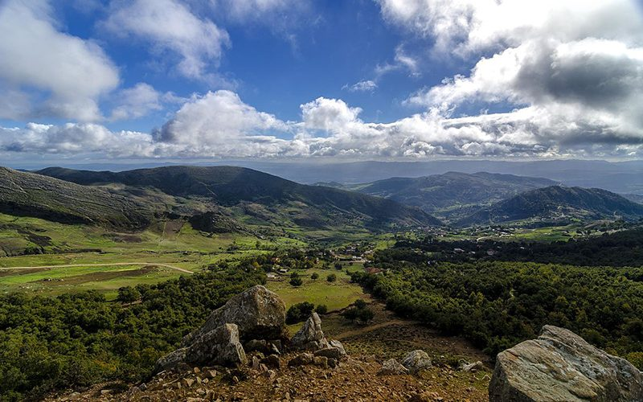
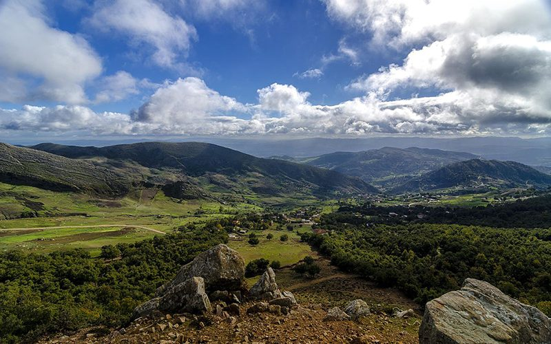
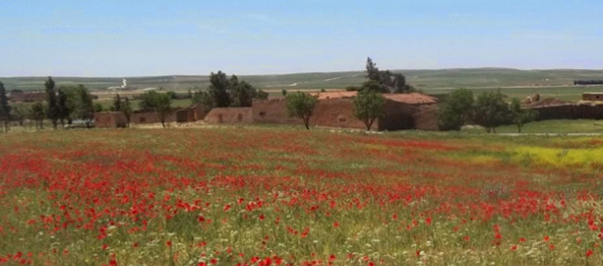
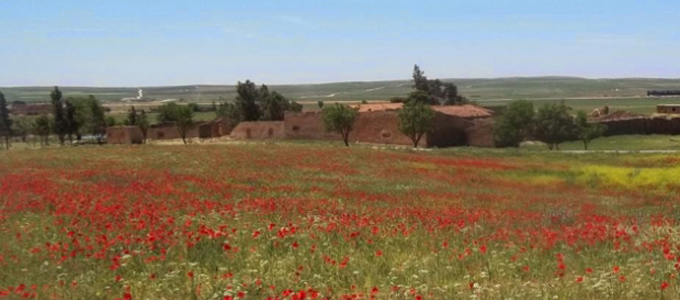

Le gouvernorat de Sidi Bouzid se situe au centre ouest du pays. Il est limité par les gouvernorats de Kairouan et Siliana au nord, Kasserine et Gafsa à l´ouest, Sfax à l´est et Gabès au sud. Etant donné ses caractéristiques climatiques et géographiques, la région possède plusieurs avantages comparatifs dans le secteur de l´agriculture qui la démarque des autres régions tunisiennes.

La ville s'est développée sous le protectorat français : c'est en 1901 qu'est créée l'école franco-arabe d'El Hamma autour du noyau villageois de Saddaguia, devenue un faubourg de la ville. En 1943, elle est le théâtre d'une bataille importante, la bataille de Sidi Bouzid.
La plaine de Sidi Bouzid est consacrée à la culture des céréales, des arbres fruitiers et au maraîchage. Ainsi, la ville est le premier producteur de légumes du pays et l'un de ses principaux bassins laitiers. Elle commercialise également une race d'agneau élevée localement et qui a obtenu une AOC. Ceux du village voisin de Faïd sont particulièrement renommés.


 



 
